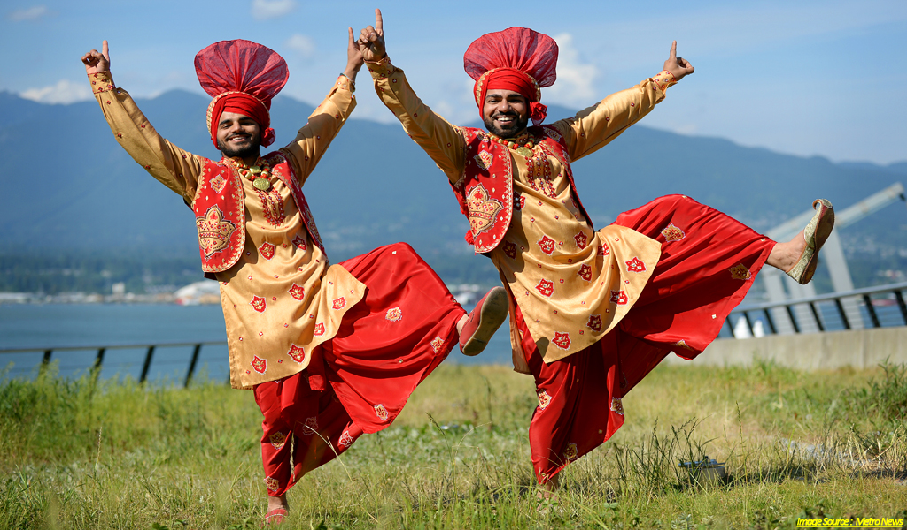

There are thousands of dance forms present in whole over the world among which some of them are mostly in practice.
Tutus, pointe shoes and men in tights are what come to mind when someone speaks of ballet. Yet Ballet is so much
more than that. Said to be the most difficult genre to master, ballet is a poised style of dance that is at the
core of all forms of dance. It is usually set, but not limited to, orchestrated music and is often the first
dance style a child will experience as they begin their dance training. Ballet shoes are usually worn until the
dancers feet have developed enough strength to progress into pointe shoes. This often happens around the age of
12 and only after the students have been given permission by their teacher. Ballet is an excellent teaching tool
for all dancers as it is a complex mixture of technique, coordination and musicality.
Contemporary dance embodies ballet, modern, jazz and lyrical. It uses technique such as ballet as its
fundamentals and creates many more greater movements that do not adhere to the strict rules of ballet and
modern. There are different categories of contemporary dance such as Contemporary Ballet and Contemporary Jazz.
Contemporary dance is often danced to all types of music and in bare feet with non-traditional costumes.

Hip Hop is an urban dance style also known as Street Dance. Hip Hop is edgy, raw and intense. The founder of
popping, locking and krumping, Hip Hop is mostly danced to rap, urban and hip hop music. High top sneakers,
funky bright sneakers, and traditional Hip Hop Shoes are normally worn by dancers. What sets Hip Hop apart from
most dance genres is that it is often freestyle in nature and does not follow a vocabulary. Hip Hop is a style
of dance that is open to personal expression.

Salsa is a popular form of social dance originating in Cuba in the 1990s and before from United States of
America
U.S.A regions of New York and Puerto Rico and Cuban folk dances. The movements of Salsa are a combination of the
Afro-Cuban dances Son, cha-cha-cha, Mambo, Rumba, bomba and the Danzon. This new rhythm was combined with
American
jazz and taken to New York by Cuban musicians.

Bharatanatyam, a pre-eminent Indian classical dance form presumably the oldest classical dance heritage of India
is regarded as mother of many other Indian classical dance forms. Conventionally a solo dance performed only by
women, it initiated in the Hindu temples of Tamil Nadu and eventually flourished in South India. Theoretical
base of this form traces back to ‘Natya Shastra’, the ancient Sanskrit Hindu text on the performing arts. A form
of illustrative anecdote of Hindu religious themes and spiritual ideas emoted by dancer with excellent footwork
and impressive gestures its performance repertoire includes nrita, nritya and natya. Accompanists include a
singer, music and particularly the guru who directs and conducts the performance. It also continues to inspire
several art forms including paintings and sculptures starting from the spectacular 6th to 9th century CE temple
sculptures.

Break dance is a type of dance that is done by people who are part of the hip hop culture which is also named
as B-boying and B-girling. B-boy means boy who dances on breaks (breakbeats). Breakdancing was invented in
early 1970s by African American and Latino American inner-city youth in the South Bronx in New York City.The
dance style evolved during the 70s and 80s in big cities of the United States. Breakdancing uses different body
movements, spins, arm movements, leg movements, all of which are done to therhythm of hip hop music.
Breakdancing
was most popular in the 1980s but continues to be common today.There are four categories in breakdance. They are
power moves (windmill, tomas, airtrax and so on), style moves, toprock, downrock (footwork), and freezes (chair,
airchair and so on). Many of moves come from gymnastics and kung-fu. Breakdancers dance with breakbeats. The
difficulty of their skills decides the better b-boy. One of the biggest breakdance contests in the world is
Battle of the Year (BOTY). It has several different types of contests. There are one-on-one battles, team
battle,
contest of showcase and so on. B-boy battle means dancing on random music. In 2013, the team coming from South
Korea,
Fusion MC, won the championship.

Bhangra is a type of traditional dance of the Indian subcontinent, originating in Punjab.The dance was associated primarily with the spring harvest festival Baisakhi, and it is from one of the major products of the harvest—bhang (hemp)—that bhangra drew its name. In a typical performance, several dancers executed vigorous kicks, leaps, and bends of the body to the accompaniment of short songs called boliyan and, most significantly, to the beat of a dhol (double-headed drum). Struck with a heavy beater on one end and with a lighter stick on the other, the dhol imbued the music with a syncopated (accents on the weak beats), swinging rhythmic character that has generally remained the hallmark of any music that has come to bear the bhangra name. Where Giddha is a popular folk dance of women in Punjab region of India and Pakistan. Giddha varies from other forms of traditional Punjabi dance in that it does not require the two-headed barrel dhol drum to be performed. Instead, women stand in a circle formation and clap rhythms. A lead woman will recite a boli (lyrics) with a refrain that the entire circle then repeats. The whole form of a giddha song is worked through in this call and response form. Giddha details stories of women's lives, including marriage, sexuality, domestic life, and homesickness. 
Jazz is the most popular style of dance among dancers. Jazz pulls from all dance styles mixing them together to create a high energy style that knows no boundaries. It has been influenced by ballet, modern, tap, hip-hop, African dance and many more styles. Jazz is most often set to up beat popular songs of the time. Jazz shoes are worn for this style and are typically a leather split sole allowing the dancers foot more freedom to bend and move. Due to the upbeat music, power packed moves and limitless style, it isn’t hard to see why this is the most popular dance style!
Though the basis of lyrical is ballet it also encompasses both jazz and modern. It is dynamic while instantaneously subtle. Lyrical focuses on conveying feelings and emotions through movement and is usually set to popular songs. Lyrical is often danced wearing Twyla’s, Dance Paws, FootUndeez or bare feet. Though proper dance techniques are important, the true heart of lyrical is found in its expressive nature.
ABOUT